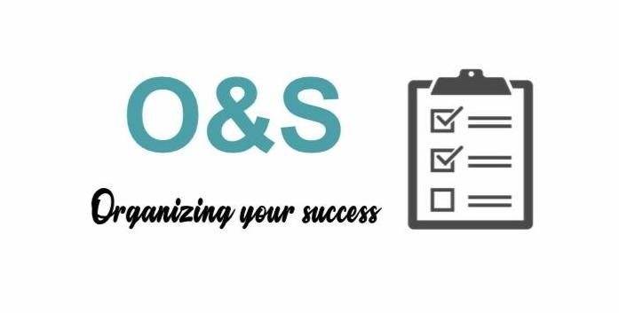

Click the logo!
This website was built by me in 2019 would run away at the sight of code, hence the interface used was wixsite.
I did enjoy playing around with the creative features and tabs on the page!
Organize and succeed is a start-up company that makes organizers and planners to help children, students, and adults to manage their time more efficiently.
Planners are customized to suit the customer's schedule and help them optimize their productivity.
Organizing and Succeeding has no age!
Cool fact: I was recognized by my country's national radio platform- Radio City 91.1 and was awarded rising start-up of the day!
Here is a link to my interview with the company.
Interview with 91.1 Radio City